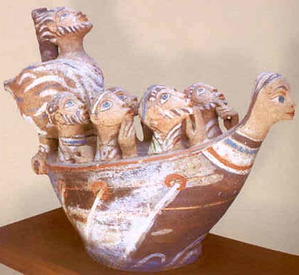

Conditional sentences
are those that contain a clause introduced by a word that means
"if," "if not," or "unless." In
Greek, there are several different patterns for these sentences,
depending on the precise intention of the speaker or writer.
These patterns can usually be matched to the patterns of English
conditional sentences that convey this intention. One way to
understand the patterns of conditionals is explained on page
271, Complete and Incomplete conditions. Read these examples
carefully and notice the patterns of moods in the conditional
and main clauses.
Another way to
understand the meaning of conditional sentences is to learn a
name for each pattern which gives a hint for translating. The
"if-clause" is called the protasis, and the
conclusion or main clause is called the apodosis. For
the protasis the negative is mh/
while for the apodosis the negative is usually ou).
|
PROTASIS |
APODOSIS |
 SIMPLE
(ACTUAL) SIMPLE
(ACTUAL) |
ei) +
Indicative |
Indicative |
|
ei)
Odusseu\j keleu/ei, oi( e9tai~roi pei/qontai. |
|
If Odysseus orders,
the companions obey. |
|
PROTASIS |
APODOSIS |
|
FUTURE
MORE VIVID |
e)a/n +
Subjunctive |
Future
Indicative or Imperative |
|
e)a\n Odusseu\j keleu/h| oi(
e9tai~roi pei/sontai. |
|
If Odysseus orders,
the companions will obey. |
|
PROTASIS |
APODOSIS |
|
FUTURE
LESS VIVID |
ei) +
Optative |
Optative + a!n |
|
ei) Odusseu\j keleu/oi oi( e9tai~roi
pei/qointo a@n. |
|
If Odysseus should
order (were to order), the companions would obey. |
|
PROTASIS |
APODOSIS |
|
PRESENT
GENERAL |
e)a/n +
Subjunctive |
Present Indicative |
|
e)a\n Odusseu\j keleu/h| oi(
e9tai~roi pei/qontai. |
|
If Odysseus (ever)
orders, the companions obey. |
|
PROTASIS |
APODOSIS |
|
PAST
GENERAL |
ei) +
Optative |
Imperfect Indicative |
|
ei) Odusseu\j keleu/oi oi( e9tai~roi
e)pei/qonto. |
|
If Odysseus (ever)
ordered, the companions obeyed. |
|
PROTASIS |
APODOSIS |
|
PRESENT
CONTRARY TO FACT |
ei) +
Imperfect Indicative |
Imperfect Indicative
+ a)n |
|
ei) Odusseu\j e)ke/leue oi( e9tai~roi
e)pei/qonto a)n. |
|
If Odysseus were
ordering, the companions would obey (would be obeying). |
|
PROTASIS |
APODOSIS |
|
PAST
CONTRARY TO FACT |
ei) +
Aorist Indicative |
Aorist Indicative + a)n |
|
ei) Odusseu\j e)ke/leuse oi(
e9tai~roi e)pei/santo a)n. |
|
If Odysseus had
ordered, the companions would have obeyed. |

|
Odysseus, Margit Kovacs
Collection, Szentendre, Hungary |
|
"ei) ga\r mh\ kate/sxon me i(e/menon
pro\j ta\j Seirh~naj ...." |

oi}da is a very common verb. It is a "defective"
verb in the sense that it only has a very limited number of forms.
Most of these appear on page 91, and all are given on page 242.
A quick look at these forms, however, will tell you that this
troublesome little verb has three stems to learn to recognize
in addition to oi}d-, and that it will be
easy to confuse many of its forms with those of other verbs (aorist
of o(ra/w, for instance, or forms
of a)|dw). Study its forms on
page 91 very carefully so that you are able to recognize this
verb correctly when you meet it in your reading, and let context
help you see it for what it is.
EXERCISES

XXIX-XXX,
A. Find
the conditional sentences in these two chapters and identify
each as to its type. Translate each of these sentences.
Answer
Key
XXIX-XXX,
B. Identify
the mood and tense of each form of oi}da:
| 1. oi}sqa |
| 2. i@sqi |
| 3. ei)dw/j |
| 4. ei@setai |
| 5. ei)do/tej |
| 6. h!|dei |
| 7. ei)de/nai |
| 8. i)/sasi |
| 9. ei)dei~en |
| 10. ei)dw~men |
Answer
Key